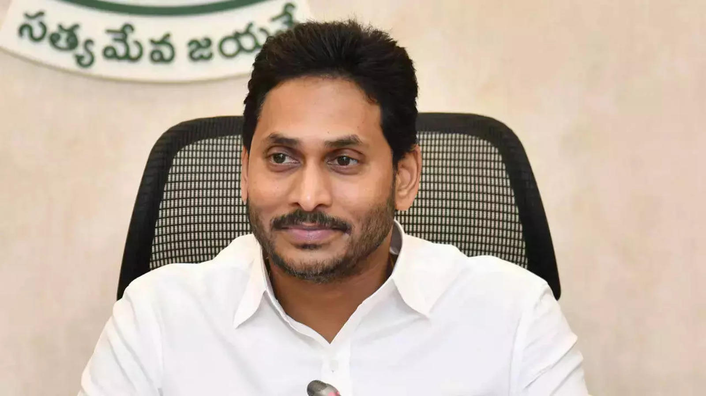

Nara Chandrababu Naidu Telugu pronunciation: [ˈn…ëÀêr…ëÀê ˈt É ånÀådr…ëÀê ˈb…ëÀêbuː ˈnaɪduː] (born 20 April 1950), commonly known as CBN, is a prominent Indian politician who is currently serving as the 13th Chief Minister of Andhra Pradesh. He was democratically elected to this position with a landslide victory in 2024. Naidu has had a distinguished political career, previously serving as Chief Minister from 1995 to 2004 before the state's bifurcation and again from 2014 to 2019 after the bifurcation. In addition to his terms as Chief Minister, Naidu served as the Leader of the Opposition in the Andhra Pradesh Legislative Assembly from 2004 to 2014 and from 2019 to 2024. His leadership has been pivotal in shaping the political landscape of Andhra Pradesh over the past few decades. Since 2015, Naidu has held the position of national president of the Telugu Desam Party (TDP), underlining his influential role within the party and his continued commitment to its ideals and objectives. His tenure in various capacities has been marked by significant contributions to the development and modernization of Andhra Pradesh, particularly in the areas of infrastructure and technology. Naidu's political career began in the 1970s with the Indian National Congress. In 1978, he was elected to the Andhra Pradesh Legislative Assembly, and from 1980 to 1982, he served as a minister in the state cabinet. Afterwards, he switched party allegiance and joined TDP, which had been founded by Nandamuri Taraka Rama Rao his father in law.[3] Naidu served as a TDP Member of the Legislative Assembly (MLA) from 1989 to 1995, during which period he became a high-profile opposition leader.[4] In 1995, he became the Chief Minister of Andhra Pradesh. During his two terms as Chief Minister, Naidu's public image was that of an economic reformer and proponent of information technology-based economic growth. His policies brought modernisation and investments particularly to Hyderabad, where he directed the founding of HITEC City.[3] He also had a role in national politics, first as the convener of the United Front in 1996. He supported the Bharatiya Janata Party (BJP)-led National Democratic Alliance (NDA) after the 1999 Lok Sabha elections, in which TDP won 29 seats, enhancing Naidu's reputation as a nationally prominent politician. In 2014, after having been the leader of opposition during the whole intervening period, Naidu returned as Chief Minister, winning in the now-residuary (due to bifurcation) Andhra Pradesh. Between 2014 and 2019, he developed the basic infrastructure for new Andhra Pradesh, brought in several big-ticket foreign investments such as Kia Motors and created thousands of jobs for the state's youth.[5] In the 2019 Andhra Pradesh Legislative Assembly election, Naidu's party faced an electoral setback, with TDP winning only 23 out of 175 seats.[6] In September 2023, Naidu was arrested by the Crime Investigation Department (CID) police in Andhra Pradesh due to alleged involvement in the skills development case and was granted bail by the Andhra Pradesh High Court in November 2023.[7]

Yeduguri Sandinti Jagan Mohan Reddy (born 21 December 1972), also known mononymously as Jagan, is an Indian politician, currently serving as the Member of Legislative Assembly (MLA) representing Pulivendula Assembly constituency in the Andhra Pradesh Legislative assembly. He served as the 17th Chief Minister of Andhra Pradesh from 2019 to 2024, and is the current president of the YSR Congress Party (YSRCP). He is also the son of Y. S. Rajasekhara Reddy. Jagan Mohan Reddy started his political career in the Indian National Congress and was elected as the Member of Parliament of Kadapa in 2009.[12] After his father's death due to a helicopter crash in 2009, he started an Odarpu Yatra (a consoling tour) across the state.[13] He then eventually came out of the Congress Party and established his own party, YSR Congress Party which also matches his father's acronym, YSR.[14] On 27 May 2012, Reddy was arrested by the Central Bureau of Investigation (CBI) on embezzlement charges. CBI summoned Reddy for allegedly amassing huge assets through illegal means by using his father's office, Y. S. Rajasekhara Reddy, when he was the chief minister. CBI and ED has also summoned 58 companies of investing in Reddy's businesses, for the favours they allegedly received in the form of mining leases, allotments of projects.[15] His judicial custody was extended repeatedly as the investigation proceeded.[16][17][18] The Supreme Court of India dismissed his Bail petition on 4 July 2012,[19][20] 9 August 2012, 7 November 2012,[21] 9 May 2013,[22] 13 May 2013.[23][24] In the 2014 Andhra Pradesh Legislative Assembly elections, YSRCP won 67 seats and he became the Leader of the Opposition.[25] Five years later, in 2019 Andhra Pradesh Legislative Assembly elections, he led the party to a landslide victory in the state elections by winning 151 seats of the total 175 assembly segments.[26] His party suffered severe anti-incumbency and defeat in the 2024 Andhra Pradesh legislative assembly election slumping down to a meagre 11 seats from 151 in 2019.[27][28][29] Early life Jagan Mohan Reddy was born into a Christian Reddy family in Jammalamadugu in Kadapa district of Andhra Pradesh to Y. S. Rajasekhara Reddy and Y. S. Vijayamma.[30][31] Reddy has a younger sister, Y. S. Sharmila, who is also a politician.[32] He studied at the Hyderabad Public School up to 12th grade.[31] Telugu actor Sumanth Kumar Yarlagadda was his best friend at school.[33] He graduated with a Bachelor of Commerce degree[30][31] from Pragathi Mahavidyalaya Degree and PG college,[image 1] Ram Koti, Hyderabad.[34] Reddy married Bharathi on 28 August 1996.[30][31] The couple has two daughters, the elder of whom studied undergraduate in London.[30][31] Business ventures Reddy first acquired Sandur Power Company Limited (SPCL), a defunct power project from its original promoter M B Ghorpade in 2001.[35] SPCL later invested crores of rupees in other companies and could acquire more businesses. It is headed by his wife, Y. S. Bharathi.[36] Reddy sold his shares in SPCL and moved away from his active direct businesses as he got more involved in politics.[37]
Konidela Pawan Kalyan (born Konidela Kalyan Babu; 2 September 1968[n 1]) is an Indian politician, actor, and founder of the Jana Sena Party. He is currently serving as the 9th Deputy Chief Minister of Andhra Pradesh since June 2024.[4] He is also serving as the Minister of Panchayat Raj and Rural Development, Environment, Forests, and Science and Technologies in the Government of Andhra Pradesh.[5] Primarily working in Telugu cinema, he is known for his unique acting style and mannerisms. He has a large fan base and is one of the highest-paid actors of Indian cinema. He has been featured in Forbes India's Celebrity 100 list multiple times since 2013. Kalyan is the recipient of a Filmfare Award South and a SIIMA Award among other accolades.[9] Kalyan made his acting debut in the 1996 film Akkada Ammayi Ikkada Abbayi but rose to prominence with the dramas Gokulamlo Seeta (1997) and Suswagatham (1998). He achieved stardom for his performance in Tholi Prema (1998), which won the National Film Award for Best Feature Film in Telugu that year. Kalyan established himself as a leading actor with successful projects such as Thammudu (1999), Badri (2000), Kushi (2001), Balu (2005), Jalsa (2008), Gabbar Singh (2012), Attarintiki Daredi (2013), Gopala Gopala (2015), Vakeel Saab (2021), and Bheemla Nayak (2022).[10] He received the Filmfare Award for Best Actor – Telugu for Gabbar Singh while Attarintiki Daredi held the record of being the highest-grossing Telugu film of all time.[11][12] In addition to acting, he produces films under the banners Anjana Productions and Pawan Kalyan Creative Works.[13] In 2008, Kalyan entered into politics as the youth wing president of his brother Chiranjeevi's Praja Rajyam Party, but he left after it merged into the Congress party. He founded the Jana Sena Party in March 2014 and was listed as the most searched Indian celebrity politician on Google at the time.[14][15][16] He is a black belt in Karate and trains in various martial arts which he depicts in his films regularly. Kalyan is referred to as Power Star by his fans and in the media. Kalyan is the founder of the charity Common Man Protection Force.[17][18][19][20][21]

Nara Lokesh (born 23 January 1983) is an Indian politician, serving as the Information Technology and Communication Industries Minister in the Government of Andhra Pradesh. He is the son of Telugu Desam Party (TDP) chief and the Chief Minister of Andhra Pradesh, N. Chandrababu Naidu. He also served as Panchayat Raj, Rural development and IT and Communication minister through an MLC post.[3] He was severely criticized for not contesting the elections and becoming a minister in his father Chandrababu Naidu's cabinet.[4][5][6] However, after great criticism for not contesting any election, he finally chose to contest as an MLA for Mangalagiri Assembly Constituency and lost to YSR Congress Party candidate Alla Ramakrishna Reddy in 2019 Andhra Pradesh Legislative Assembly elections.[7][8] Both he and his father, TDP chief, Chandrababu Naidu suffered a major political setback in the 2019 Andhra Pradesh Legislative Assembly Elections by winning only 23 seats out of the total 175 seats.[9] This was TDP's worst defeat ever.[10][11] Education Lokesh has an MBA from Stanford University Graduate School of Business and Bachelor of Science with a specialization in Management Information Systems from Carnegie Mellon University.[12]